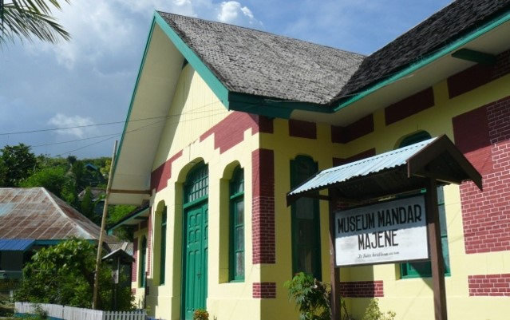

Sejarah

Gambaran mengenai Madjene di awal abad 19 yang disadur dari laporan Tahunan
Dr.Kaiser, Dokter Belanda Pertama yang ditugaskan dan bertanggung jawab pada
Rumah Sakit pertama di Majene yang bangunannya sekarang menjadi museum Mandar.
Sang dokter dibantu oleh 5 perawat (Laki laki dan Perempuan), 5 Siswa Perawat,
3 Kuli, dan 1 Koki, dengan poliklinik, tiga Vaksinator (tukang suntik/setingkat mantri),
2 tentara medis. Berdasarkan nama nama mereka dapat diasumsikan semuanya adalah
orang Pribumi (Indonesia).
Meskipun Vereenigde Oostindische Compagnie (VOC) memulai penguasaan dan monopoli
perdagangan di wilayah nusantara pada abad ke 17 seperti melalui penguasaan
pelabuhan di Makassar dan perjanjian dengan raja-raja Bugis dan Makassar,
baru pada awal abad 20 (1905) Pasukan Belanda menjejakkan kaki di Tanah Mandar
dengan tujuan memperluas penguasaan, monopoli dan control di wilayah nusantara.
Geografis

Kabupaten Majene adalah salah satu daerah tingkat II di provinsi Sulawesi Barat, Indonesia.
Ibu kota kabupaten ini terletak di Kota Majene. Kabupaten ini memiliki luas wilayah 947,84 Km²
dan berpenduduk sebanyak 138.825 jiwa. Kabupaten Majene mempunyai posisi wilayah yang strategis,
terletak sekitar 302 km sebelah utara Kota Makassar. Kabupaten ini dilengkapi dengan terminal
induk dan terminal pembantu, sarana pelabuhan seperti pelabuhan Majene di kecamatan Banggai,
Pelabuhan Palipi di kecamatan Sendana serta Pelabuhan Laut yang ada di kecamatan Pamboang dan
kecamatan Malunda. Kabupaten Majene juga didukung dengan keberadaan sarana perdagangan berupa
pasar permanen dan pasar darurat.
batas wilayah administrasi
| Utara |
Kabupaten Mamuju |
| Timur |
abupaten polewali mandar dan kebupaten mamasa |
| Selatan |
teluk mandar |
| Barat |
selat makassar |
Wisata
Kabupaten ini, merupakan salah satu dari enam kabupaten di Sulawesi Barat yang terletak
di pesisir pantai barat Provinsi Sulbar, memanjang dari Selatan ke Utara. Kabupaten Majene
terdiri dari delapan kecamatan, 20 kelurahan dan 62 desa.
Secara administratif, Kabupaten Majene berbatasan dengan wilayah Kabupaten Mamuju di sebelah
Utara, Kabupaten Polewali Mandar dan Kabupaten Mamasa di sebelah Timur, Teluk Mandar di sebelah
Selatan serta Selat Makassar di sebelah Barat. Secara geografis Kabupaten Majene memiliki kontur wilayah seperti palung, sehingga kawasan ini
memiliki bentang alam pegunungan dan lembah sekaligus. Pesona alam daerah ini lah yang menjadi
daya tarik wisata Majene. Meski potensi wisata Majene belum dikenal secara luas oleh para wisatawan, pesonanya
tetap layak menjadi salah satu rekomendasi destinasi berlibur.
berikut adalah destinasi wisata yang ada di kabupaten Majene
pantai dato

Pantai Dato pertama kali dibuka pada tahun 1998. Pantai ini berada di Dusun Pangale, Kelurahan Baurung,
Kecamatan Banggae Timur. Daya tarik pantai ini adalah keberadaan pasir putih dan pemandangan batuan karang,
di sepanjang garis pantainya, para wisatawan dapat menemukan kepiting, kerang, dan hewan laut kecil.
Dengan perairan lepas pantai yang cenderung tenang dan dangkal, ada banyak kegiatan yang dapat dilakukan
di pantai ini mulai dari bermain pasir, berenang, memancing, dan menyelam. Di dalam air ada terumbu karang
yang masih terjaga dengan baik. Di kawasan wisata ini, para wisatawan juga dapat mencicipi kuliner khas Majene
yaitu ikan terbang dan ikan seribu.
Makam Raja-raja Banggae

Makam Raja-raja Banggae berada di Jalan Ondongan, Kampung Pangali-ali, Kecamatan Banggae. Keberadaan
area pemakaman ini bisa menjadi bukti eksistensi peradaban Suku Mandar, kompleks ini merupakan pemakaman
bagi raja atau mara’dia dan anggota hadat Banggae. Kemunculan hadat Banggae sendiri, diperkirakan pada
masa pemerintahan Daenta Melanto , saat bergabungnya Totoli kedalam kerajaan Banggae. Secara keseluruhan,
ada 471 makam di kompleks seluas 1,6 hektare tersebut dan ini menjadikannya sebagai kompleks makam adat
terluas di Sulawesi Barat. Keunikan dari kompleks adat ini, adalah pusaranya terbuat dari batu padas atau
batu karang yang dipahat. Pada pusara, juga terdapat berbagai motif ukiran seperti kaligrafi, geometri,
swastika, hiasan antropomorfis dengan motif manusia dan binatang, dan motif bunga. Namun, di sana tidak
ada prasasti atau petunjuk tulisan yang menjelaskan siapa yang dimakamkan beserta waktunya.
Museum Mandar

Museum Mandar berada di Jalan Raden Suradi Nomor. Museum ini memiliki 1.304 buah koleksi, mulai dari koleksi
geologi, geografi, numismatik, heraldik, filologi, keramik, biologi, etnografi, arkeologi, sejarah, seni rupa,
dan teknologi. Memasuki museum, para wisatawan akan melihat nuansa seperti berada di rumah sakit. Beberapa
koleksi di museum ini, antara lain pakaian pengantin Mara’dia dan bangsawan adat atau Topia yang secara keseluruhan
disesuaikan dengan status sosial.
Di museum ini juga, ada seekor ular sawah yang diawetkan dan panjangnya sekitar delapan meter. Koleksi unik lain
di Museum Mandar, adalah patung batu berbentuk kepala manusia, tiga cincin ukuran raksasa, sarkofagus, koleksi corak
sarung Mandar, miniatur rumah adat, perkakas tradisional, alat tenun, perkakas pertanian dan nelayan, senjata tradisional,
hingga perlengkapan upacara adat, dan perhiasan.